통계적 학습이란 무엇인가
- 문헌에서 통계적 학습(statistical learning)은 데이터셋에 포함된 변수 사이의 관계를 수학적으로 표현하고 추정하는 데 도움을 주는 접근법을 의미한다.
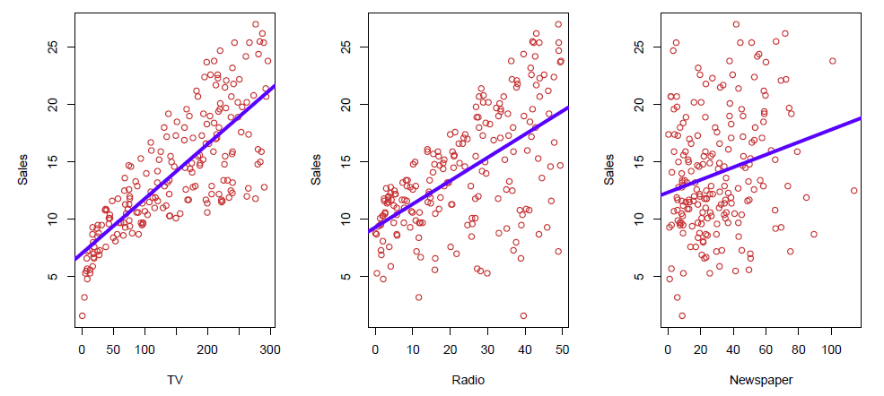
- 그림은 TV, 라디오, 신문 광고비와 매출의 관계를 보여주며, 각 패널에는 파란색 선형회귀선이 적합되어 있다.
- 이 세 가지 광고매체를 이용하여 매출을 예측할 수 있을까?
- 다음과 같은 모형을 사용하면 더 나은 예측이 가능할 수 있다.
\[
Sales \approx f(TV, Radio, Newspaper)
\]
- 여기서
Sales는 예측하려는 반응변수 또는 목표변수이다.
- 반응변수는 일반적으로 \(Y\)로 나타낸다.
TV는 특성, 입력 또는 예측변수이며 \(X_1\)로 나타낸다.- 같은 방식으로
Radio는 \(X_2\)로 나타내며, 나머지 변수도 순서대로 표기한다.
- 입력변수 전체를 다음과 같은 벡터로 표현할 수 있다.
\[
\mathbf{X}=\begin{pmatrix}
X_{1}\\
X_{2}\\
X_{3}\\
\end{pmatrix}
\]
- 출력변수 \(Y\)와 입력변수 \(X\)가 모두 존재하는 지도학습에서는 다음 식을 만족하는 함수 \(f\)를 찾는 문제로 정리할 수 있다.
\[
Y=f(X)+\epsilon
\]
여기서 \(\epsilon\)은 측정오차와 모형으로 설명되지 않는 차이를 나타낸다.
- \(f\)는 고정되어 있지만 알려지지 않은 함수이고, \(X=(X_1,X_2,X_3)\)는 예측변수 집합이다. \(\epsilon\)은 \(X\)와 독립이며 평균이 0인 확률오차항이다.
\(f(X)\)는 무엇에 유용한가?
- \(f\)를 잘 추정하면 새로운 입력값 \(X=x\)에서 \(Y\)를 예측할 수 있다.
- \(X=(X_1,X_2,\ldots,X_p)\)의 어떤 성분이 \(Y\)를 설명하는 데 중요하며 어떤 성분이 중요하지 않은지 파악할 수 있다.
- 예를 들어 근속연수와 교육연수는 소득에 큰 영향을 미칠 수 있지만 혼인상태는 일반적으로 영향이 크지 않을 수 있다.
- \(f\)의 복잡도에 따라 각 성분 \(X_j\)가 \(Y\)에 미치는 영향을 구체적으로 이해할 수도 있다.
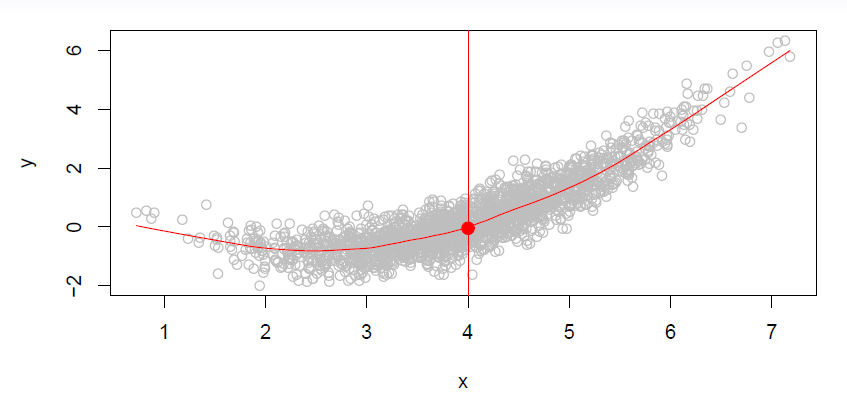
- 이상적인 \(f(X)\)가 존재할까?
- 예를 들어 \(X=4\)일 때 \(f(X)\)의 적절한 값은 무엇일까?
- \(X=4\)인 경우에도 여러 개의 서로 다른 \(Y\) 값이 관찰될 수 있다.
- 적절한 값은 다음과 같다.
\[
f(4)=E(Y\mid X=4)
\]
- \(E(Y\mid X=4)\)는 \(X=4\)가 주어졌을 때 \(Y\)의 기댓값, 즉 평균을 의미한다.
- 이상적인 함수 \(f(x)=E(Y\mid X=x)\)를 회귀함수(regression function)라고 한다.
- 회귀함수는 벡터 형태의 \(X\)에 대해서도 정의할 수 있다.
\[
f(x)=f(x_1,x_2,x_3)=E(Y\mid X_1=x_1,X_2=x_2,X_3=x_3)
\]
- 이 식으로 표현되는 접근은 통계학 전반에서 널리 사용된다.
- \(Y\)에 변동이 존재할 때 전체 변동을 설명 가능한 체계적 성분과 설명되지 않는 비체계적 성분 또는 확률잡음으로 나눌 수 있다.
\[
Y=\text{체계적 성분}+\text{비체계적 성분}
\]
- 식 \(Y=f(X)+\epsilon\)에서 \(f(X)\)는 체계적 성분이고 \(\epsilon\)은 비체계적 성분이다.
목표
- 목표는 이용 가능한 자료를 바탕으로 \(f\)를 추정하는 것이다.
- James 등의 교재에서는 통계적 학습을 \(f\)를 추정하기 위한 접근법의 집합으로 정의한다.
- \(f\)를 추정하는 두 가지 주요 목적은 예측과 추론이다.
예측
- \(f\)의 추정량 \(\hat f\)와 입력 \(X\)가 주어졌다고 하자. 오차항 \(\epsilon\)의 평균이 0이므로 다음과 같이 \(Y\)를 예측할 수 있다.
\[
\hat{Y}=\hat{f}(X)
\]
- 예측이 주된 목적일 때는 \(\hat f\)를 흔히 블랙박스로 취급한다. 즉, 결과 \(Y\)를 정확하게 예측할 수 있다면 \(\hat f\)의 정확한 함수 형태는 핵심 관심사가 아닐 수 있다.
\[
\text{입력}\rightarrow\text{블랙박스}\rightarrow\text{예측}
\]
예제: 임금과 근속연수
- 임금과 현재 직장에서의 근속연수 사이의 관계가 다음과 같다고 가정하자.
\[
\log(wage)=2.3+0.025\,tenure-0.00045\,tenure^2+\epsilon
\]
여기서 \(\epsilon\sim N(0,\sigma^2)\)이고 \(\sigma=0.025\)이다.
- 아래 그림의 왼쪽 패널은 50개 관측치로 구성된 표본을, 오른쪽 패널은 실제 함수 \(f\)와 각 관측값이 함수에서 벗어난 정도를 보여준다.
tenure <- 0:40 # 동일 직장에서의 근속연수
b0 <- 2.3; b1 <- .025; b2 <- -.00045 # 모형 모수
n <- 50 # 표본크기
sigma <- .025 # 오차항의 표준편차
set.seed(seed = 111) # 예제 재현을 위한 난수 시드
x <- sample(tenure, size = n, replace = TRUE); x2 <- x^2
e <- rnorm(n = n, sd = sigma) # 오차항 epsilon
logwage <- b0 + b1 * x + b2 * x^2 + e
par(mfrow = c(1, 2)) # 그래프 영역 분할
plot(x = x, y = exp(logwage), col = "red", pch = 20,
xlab = "근속연수", ylab = "시간당 임금")
curve(expr = exp(b0 + b1 * x + b2 * x^2), from = 0, to = 40,
ylim = c(9, 15),
xlab = "근속연수", ylab = "시간당 임금")
points(x = x, y = exp(logwage), col = "red", pch = 20)
segments(x0 = x, y0 = exp(logwage), x1 = x, y1 = exp(b0 + b1 * x + b2 * x^2),
col = "blue")
- 예측오차의 첫 번째 성분은 함수 추정에서 발생하고, 두 번째 성분은 정의상 \(X\)로 예측할 수 없는 확률오차에서 발생한다.
- 평균제곱예측오차의 관점에서 \(Y\)의 이상적 또는 최적 예측변수는 \(f(x)=E(Y\mid X=x)\)이다. 이 함수는 모든 함수 \(f\) 가운데 각 \(X=x\)에서 \(E[(Y-f(X))^2\mid X=x]\)를 최소화한다.
- 추정오차 \(f(x)-\hat f(x)\)는 적절한 통계기법을 사용하여 \(f\)를 추정함으로써 줄일 수 있다.
- 따라서 이 오차를 감소 가능한 오차(reducible error)라고 한다.
- 완벽한 추정량 \(\hat f=f\)를 얻더라도 \(\epsilon\) 때문에 \(\hat y\)는 \(y\)와 다를 수 있다.
- 이 오차 \(\epsilon=Y-f(x)\)를 감소 불가능한 오차(irreducible error)라고 한다.
- 즉, \(f(x)\)를 정확히 알고 있어도 각 \(X=x\)에서 가능한 \(Y\) 값들이 분포를 이루므로 예측오차가 발생한다.
- \(f\)의 추정량 \(\hat f\)가 주어지면 예측오차 \(Y-\hat Y\)는 다음과 같이 분해된다.
\[
Y-\hat{Y}=\{f(X)-\hat f(X)\}+\epsilon
\]
- 잠시 \(\hat f\)와 \(X\)가 고정되어 있다고 가정하면 다음과 같다.
\[
\begin{aligned}
E\left[(Y-\hat{Y})^2\mid X=x\right]
&=E\left[\{f(x)+\epsilon-\hat f(x)\}^2\right]\\
&=\underbrace{\{f(x)-\hat f(x)\}^2}_{\text{감소 가능}}
+\underbrace{\operatorname{Var}(\epsilon)}_{\text{감소 불가능}}.
\end{aligned}
\]
- \(E[(Y-\hat Y)^2]\)는 실제값과 예측값 사이의 기대제곱예측오차이고, \(\operatorname{Var}(\epsilon)\)은 오차항의 분산이다.
참고
- 감소 불가능한 오차는 \(Y\) 예측 정확도의 상한을 결정하며, 같은 의미로 예측오차의 하한이 된다.
\[
E[(Y-\hat{Y})^2]\geq \operatorname{Var}(\epsilon)
\]
추론
- 추론 문제는 \(\mathbf{X}=(X_1,\ldots,X_p)\)의 함수로서 \(Y\)가 어떻게 변화하는지를 이해하는 데 관심이 있다. 따라서 추론은 모형 기반 접근에 의존한다.
- 예측 문제와 달리 추론에서는 \(f\)를 단순한 블랙박스로 취급할 수 없다.
- 다음 사항을 파악하기 위해 \(f\)의 구체적인 형태가 핵심 관심 대상이 된다.
- 어떤 예측변수가 반응변수와 관련되어 있는가?
- 반응변수와 각 예측변수 사이에는 어떤 관계가 있는가?
- \(f\)의 함수 형태는 선형인가, 아니면 더 복잡한가?
- 실제 분석에서는 추론과 예측을 동시에 목적으로 삼을 수도 있다.
예제: 광고 자료
- 다음 그래프는 TV, 라디오 및 신문 광고비와 매출의 관계를 보여준다.
library("ISLR2") # ISLR2 패키지 불러오기
## 프로젝트에 포함된 광고 자료를 불러온다.
adv <- read.csv(file = "data/Advertising.csv")
head(adv)
#> X TV radio newspaper
#> Min. : 1.00 Min. : 0.70 Min. : 0.000 Min. : 0.30
#> 1st Qu.: 50.75 1st Qu.: 74.38 1st Qu.: 9.975 1st Qu.: 12.75
#> Median :100.50 Median :149.75 Median :22.900 Median : 25.75
#> Mean :100.50 Mean :147.04 Mean :23.264 Mean : 30.55
#> 3rd Qu.:150.25 3rd Qu.:218.82 3rd Qu.:36.525 3rd Qu.: 45.10
#> Max. :200.00 Max. :296.40 Max. :49.600 Max. :114.00
#> sales
#> Min. : 1.60
#> 1st Qu.:10.38
#> Median :12.90
#> Mean :14.02
#> 3rd Qu.:17.40
#> Max. :27.00
## 산점도
par(mfrow = c(1, 3))
plot(x = adv$TV, y = adv$sales, pch = 20, xlab = "TV 광고비(천 달러)",
ylab = "매출(천 단위)", col = "steel blue")
abline(lm(sales ~ TV, data = adv), col = "blue", lwd = 2)
plot(x = adv$radio, y = adv$sales, pch = 20, xlab = "라디오 광고비(천 달러)",
ylab = "매출(천 단위)", col = "steel blue")
abline(lm(sales ~ radio, data = adv), col = "blue", lwd = 3)
plot(x = adv$newspaper, y = adv$sales, pch = 20, xlab = "신문 광고비(천 달러)",
ylab = "매출(천 단위)", col = "steel blue")
abline(lm(sales ~ newspaper, data = adv), col = "blue", lwd = 2)
질문
- 어떤 광고매체가 매출에 기여하는가?
- 어떤 광고매체가 매출을 가장 크게 증가시키는가?
- TV 광고비가 일정 금액 증가할 때 매출은 얼마나 증가하는가?
- 이러한 질문들은 추론을 목적으로 하는 질문의 예이다.
\(f\)의 추정
\(f\)를 어떻게 추정하는가?
- 일반적으로 \(X=4\)와 정확히 일치하는 자료점은 거의 없거나 전혀 없다.
- 따라서 \(E(Y\mid X=x)\)를 관측자료만으로 직접 계산할 수 없다.
- 정의를 완화하여 다음과 같이 둘 수 있다.
\[
\hat f(x)=\operatorname{Ave}\{Y\mid X\in N(x)\},
\]
여기서 \(N(x)\)는 \(x\)의 어떤 이웃 영역(neighborhood)이다.
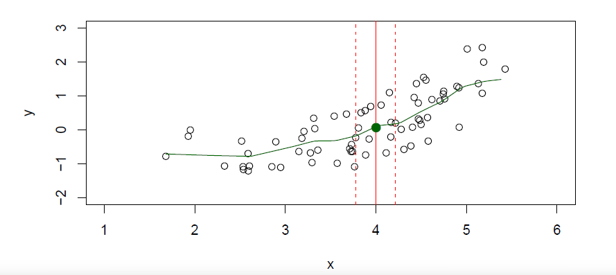
- 최근접 이웃 평균은 \(p\)가 작고 표본크기 \(N\)이 충분히 클 때 좋은 성능을 보일 수 있다.
- 이후에는 커널 평활과 스플라인 평활처럼 더 부드러운 방법을 살펴본다.
- \(p\)가 커지면 최근접 이웃 방법의 성능이 매우 나빠질 수 있다.
- 이유는 차원의 저주(curse of dimensionality)이다. 고차원 공간에서는 최근접 이웃조차 멀리 떨어져 있는 경향이 있다.
- 분산을 줄이려면 평균에 사용할 \(y_i\)가 충분해야 하며, 예를 들어 전체의 10% 정도를 사용해야 할 수 있다.
- 고차원에서 자료의 10%를 포함하는 이웃은 더 이상 국소적이지 않을 수 있으므로, 국소 평균으로 \(E(Y\mid X=x)\)를 추정한다는 취지가 약해진다.
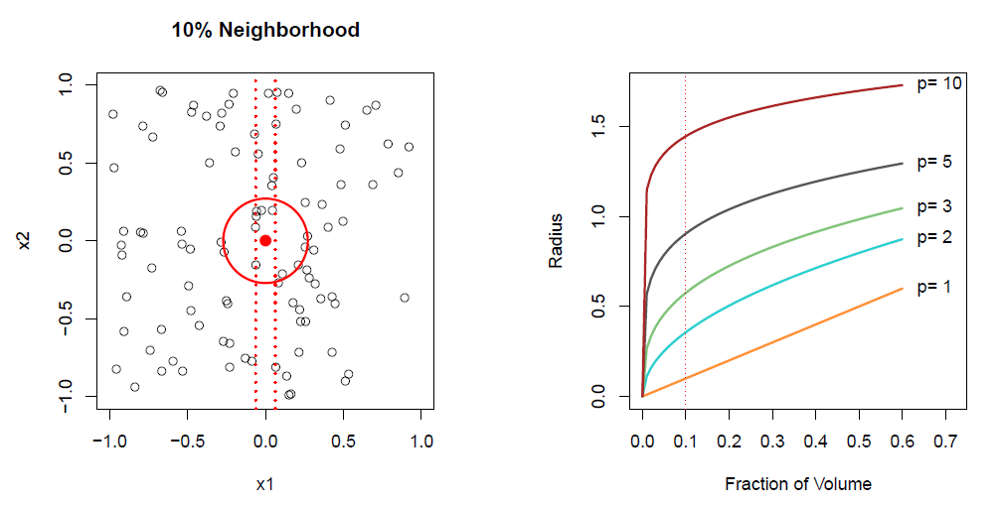
- 추정방법은 크게 모수적 방법과 비모수적 방법으로 나눌 수 있다.
모수적 방법
\[
f_L(X)=\beta_0+\beta_1X_1+\beta_2X_2+\cdots+\beta_pX_p
\]
- 선형모형은 \(p+1\)개의 모수 \(\beta_0,\beta_1,\ldots,\beta_p\)로 규정된다.
- 훈련 자료에 모형을 적합하여 이 모수들을 추정한다.
- 선형모형은 실제 관계를 완벽하게 표현하는 경우가 거의 없지만, 미지의 참함수 \(f(X)\)를 해석 가능하고 유용하게 근사하는 경우가 많다.
- 선형모형 \(\hat f_L(X)=\hat\beta_0+\hat\beta_1X\)는 다음 자료에 비교적 적절하게 적합된다.
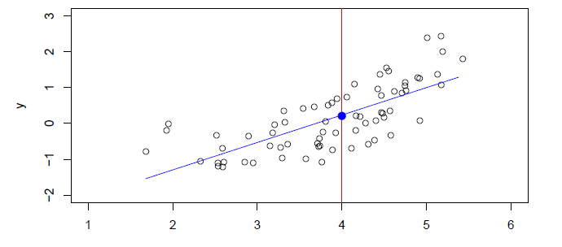
- 이차모형 \(\hat f_Q(X)=\hat\beta_0+\hat\beta_1X+\hat\beta_2X^2\)은 조금 더 나은 적합을 제공한다.
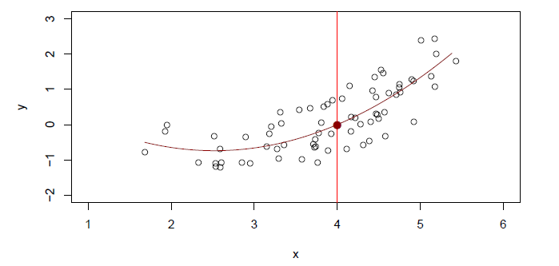
모의실험 예제
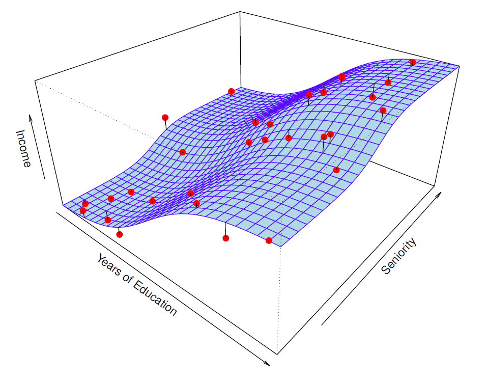
- 빨간 점은 다음 모형에서 생성한 소득의 모의값이다.
\[
income=f(education,seniority)+\epsilon
\]
파란색 곡면은 \(f\)를 나타낸다.
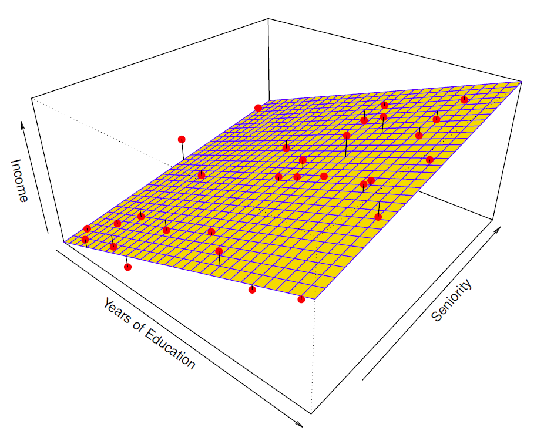
- 모의자료에 적합한 선형회귀모형은 다음과 같다.
\[
\hat f_L(education,seniority)=\hat\beta_0+\hat\beta_1\times education+\hat\beta_2\times seniority
\]
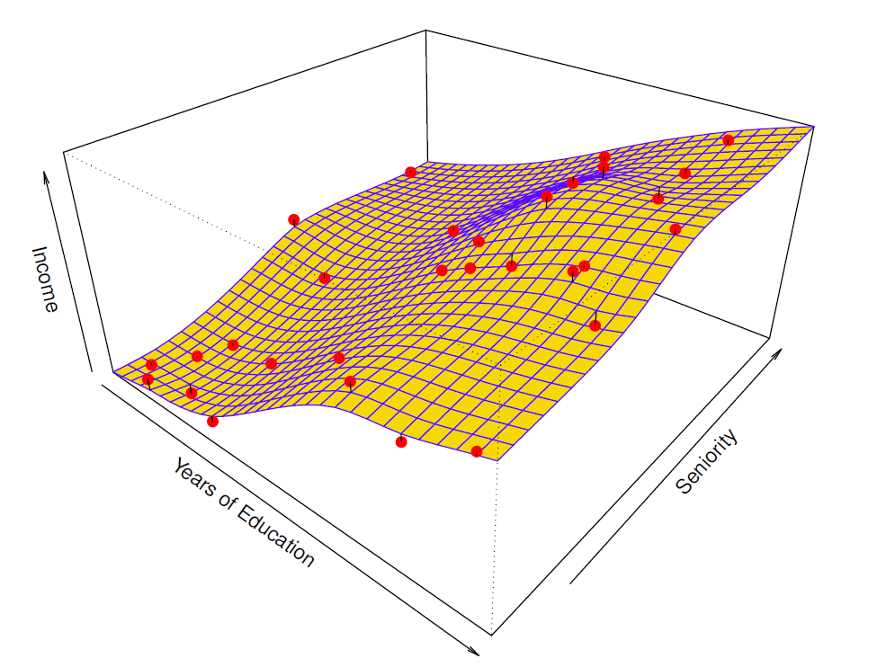
- 모의자료에 더 유연한 회귀모형 \(\hat f_S(education,seniority)\)를 적합하였다.
- 여기서는 얇은 판 스플라인(thin-plate spline)을 사용하여 유연한 곡면을 적합한다.
- 적합곡면의 거칠기 정도를 조절할 수 있다.
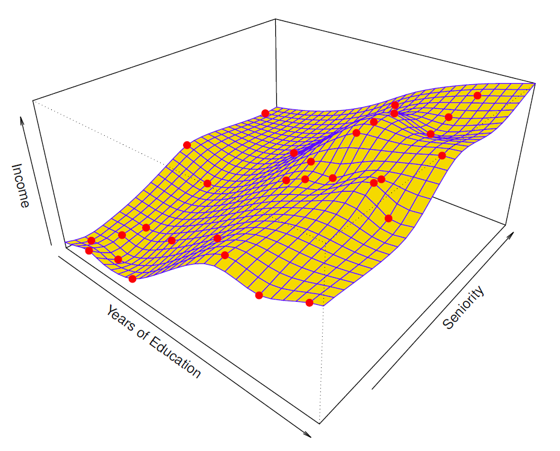
- 더욱 유연한 스플라인 회귀모형을 적합하면 훈련 자료의 모든 관측치를 정확하게 통과할 수 있다.
- 훈련 자료에서 오차가 전혀 없더라도 새로운 자료에서 성능이 좋다는 보장은 없다. 이를 과적합(overfitting)이라고 한다.
모수적 모형으로 돌아가기
- \(x\)와 \(y\)에 대한 \(n\)개의 관측치 \((x_1,y_1),\ldots,(x_n,y_n)\)가 있다고 하자. 여기서 \(x_i=(x_{i1},x_{i2},\ldots,x_{ip})\)는 \(i\)번째 관측치이다.
- \(x_{ij}\)는 \(i\)번째 관측치의 \(j\)번째 변수값을 의미한다. \(i=1,\ldots,n\), \(j=1,\ldots,p\)이다.
- 훈련 자료는 미지의 함수 \(f\)를 학습하고 추정하기 위한 \(n\)개의 관측치로 구성된다. 즉, 임의의 관측치 \((x,y)\)에 대해 \(y\approx\hat f(x)\)가 되도록 함수 \(\hat f\)를 찾는다.
일반적으로 모수적 방법은 두 단계로 구성된다.
- 모형 명세: \(f\)의 함수 형태에 대한 가정을 둔다. 예를 들어 \(x\)에 대해 선형이라고 가정하면
\[
f(x)=\beta_0+\beta_1x_1+\cdots+\beta_px_p
\]
이다. 절편 \(\beta_0\)와 기울기 계수 \(\beta_j\), \(j=1,\ldots,p\)는 모형의 알려지지 않은 모수이다.
- 추정: 모형을 명세한 뒤 훈련 자료를 사용하여 모형을 적합하거나 학습한다.
- 위 선형모형에서는 표본 관측치에 근거하여 알려지지 않은 \(p+1\)개의 모수 \(\beta_0,\beta_1,\ldots,\beta_p\)를 추정한다.
- 가장 일반적으로 사용하는 방법은 보통최소제곱법(ordinary least squares, OLS)이다.
- \(f\)에 모수적 모형을 가정하면 함수 전체를 추정하는 문제가 \(\beta\) 계수와 같은 유한한 모수 집합을 추정하는 문제로 단순화된다.
- 모수적 모형은 비교적 제약적이다. 모형의 적절성은 가정한 함수 형태가 실제 \(f\)와 얼마나 잘 일치하는지에 달려 있다.
- 가정과 실제 관계가 크게 다르면 적합도도 나빠진다.
- 유연한 모형은 다양한 형태의 \(f\)를 적합할 수 있다.
- 그러나 지나치게 유연한 모형은 훈련 자료의 확률잡음까지 따라가면서 쉽게 과적합될 수 있다.
비모수적 방법
- 비모수적 방법은 \(f\)의 함수 형태에 대해 명시적인 가정을 두지 않는다.
- 자료점에 가능한 한 가까이 적합하면서도 지나치게 거칠거나 요동하지 않는 \(f\)의 추정량을 찾는다.
- 이 방법은 모수적 접근에서 발생할 수 있는 모형 오지정 문제를 피할 수 있다.
- 하지만 \(f\)의 형태에 대한 가정이 거의 없으므로 일반적으로 많은 관측치가 필요하다.
예측 정확도와 모형의 해석 가능성
- 한 방법이 허용하는 \(f\)의 함수 형태가 다양할수록 그 방법은 더 유연하다. 그러나 유연성이 높아질수록 모형을 해석하기 어려워지는 대가가 따른다.
- 예를 들어 선형회귀는 유연성이 비교적 낮지만 해석하기 쉽다. 반면 여러 스플라인 방법이나 서포트 벡터 머신과 같은 비선형 방법은 매우 유연하지만 해석하기 어려울 수 있다.
- 목표가 추론이라면 단순하고 비교적 덜 유연한 접근이 선호된다.
- 목표가 순수하게 예측이라면 더 유연한 접근이 더 좋은 예측을 제공할 수 있다.
요약
- 예측 정확도와 해석 가능성
- 선형모형은 해석하기 쉽지만 얇은 판 스플라인은 그렇지 않다.
- 적절한 적합, 과적합 및 과소적합
- 적합의 유연성이 적절한 수준인지 어떻게 판단할 것인가?
- 간결성과 블랙박스
- 모든 변수를 사용하는 블랙박스 예측모형보다 적은 수의 변수로 구성된 단순한 모형을 선호하는 경우가 많다.
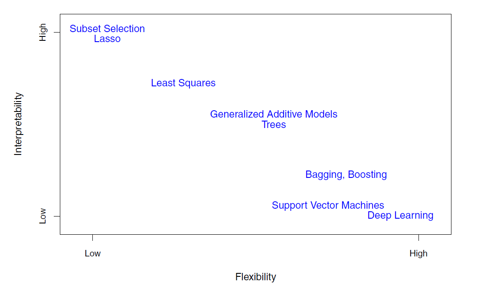
모형 정확도의 평가
답
가능한 모든 데이터셋에서 다른 방법보다 항상 우월한 단 하나의 방법은 없기 때문이다.
적합의 품질 측정
- 훈련 자료 \(Tr=\{(x_i,y_i)\}_{i=1}^N\)에 모형 \(\hat f(x)\)를 적합하고 그 성능을 평가한다고 하자.
- 회귀 문제에서 가장 널리 사용하는 성능지표 가운데 하나는 평균제곱오차(mean squared error, MSE)이다.
- 훈련 자료에서 평균제곱예측오차는 다음과 같이 계산할 수 있다.
\[
MSE_{Tr}=\operatorname{Ave}_{i\in Tr}\{y_i-\hat f(x_i)\}^2
=\frac{1}{N}\sum_{i=1}^{N}\{y_i-\hat f(x_i)\}^2
\]
그러나 이 값은 과적합된 모형을 지나치게 좋게 평가할 수 있다.
- 가능하다면 학습에 사용하지 않은 새로운 시험 자료 \(Te=\{(x_i,y_i)\}_{i=1}^M\)에서 오차를 계산해야 한다.
\[
MSE_{Te}=\operatorname{Ave}_{i\in Te}\{y_i-\hat f(x_i)\}^2
=\frac{1}{M}\sum_{i=1}^{M}\{y_i-\hat f(x_i)\}^2
\]
여기서 \(\hat f(x_i)\)는 \(i\)번째 관측치에 대한 예측값이다.
- 훈련 MSE: 훈련 표본에서 계산하며 \(\hat f\)의 정확도를 과대평가할 수 있다.
- 시험 MSE: 모형 적합에 사용하지 않은 시험 표본에서 계산하며 \(\hat f\)의 실제 예측 정확도를 더 현실적으로 보여준다.
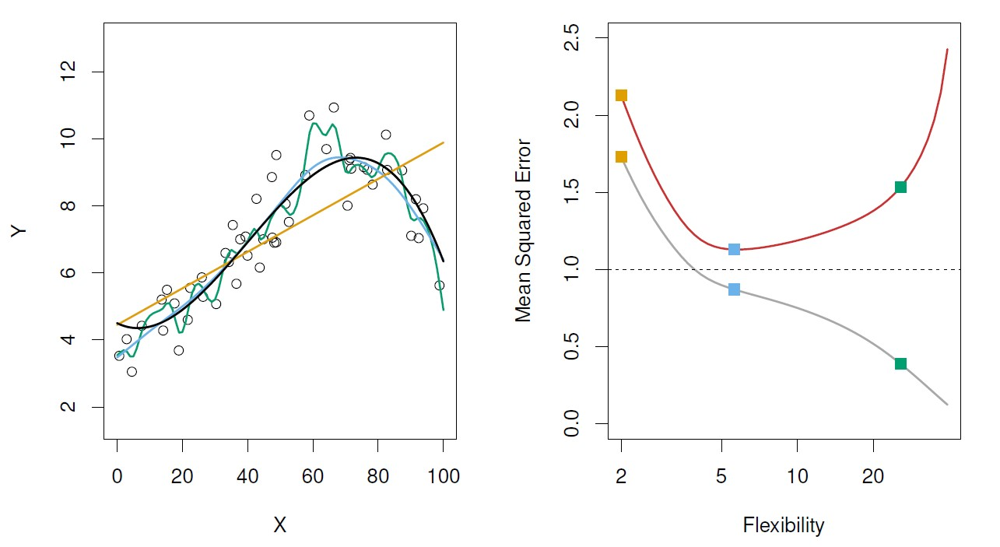
그림: 모형 정확도와 적합의 품질
- 왼쪽: 실제 함수 \(f\)(검은 선), 관측치(빈 원), 선형회귀 적합(주황색), 두 개의 스플라인 적합(파란색과 녹색)을 보여준다.
- 오른쪽: 훈련 MSE(회색)와 시험 MSE(빨간색)를 보여준다. 사각형은 왼쪽 패널의 세 모형에 대한 훈련 MSE와 시험 MSE를 나타낸다.
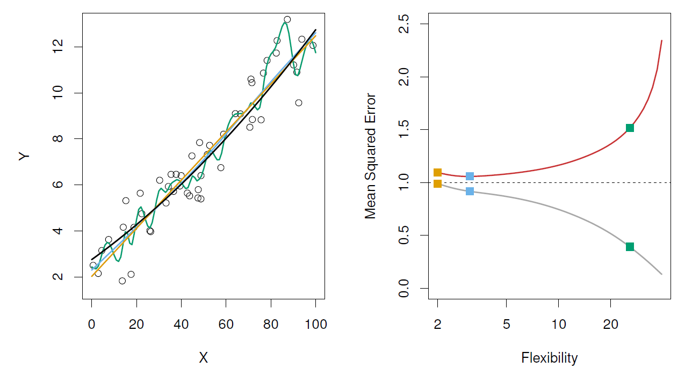
- 이 예제에서는 실제 함수가 매끄러우므로 부드러운 적합과 선형모형이 모두 좋은 성능을 보인다.
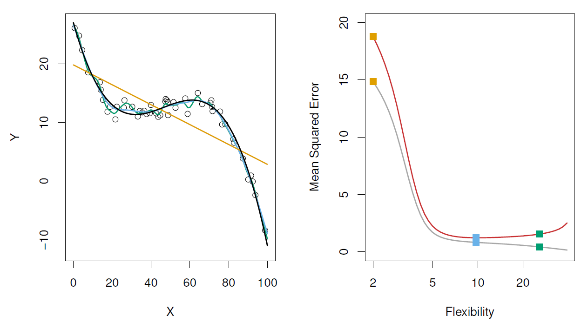
- 이 예제에서는 실제 함수가 크게 굴곡지고 잡음이 작으므로 더 유연한 적합이 가장 좋은 성능을 보인다.
별도의 시험 자료가 없다면 교차검증과 부트스트랩을 사용하여 훈련 자료에서 시험 MSE를 추정할 수 있다.
편향–분산 절충
- 훈련 자료 \(Tr\)에 모형 \(\hat f(x)\)를 적합하고, 모집단에서 추출한 시험 관측치를 \((x_0,y_0)\)라고 하자.
- 실제 모형이 \(Y=f(X)+\epsilon\)이고 \(f(x)=E(Y\mid X=x)\)라고 하자.
- 시험 관측치 \((x_0,y_0)\)에서 기대 시험 MSE는 다음과 같이 분해된다.
\[
\begin{aligned}
E\left[\{y_0-\hat f(x_0)\}^2\right]
&=\underbrace{\operatorname{Var}\{\hat f(x_0)\}}_{\text{분산}}
+\underbrace{\left[\operatorname{Bias}\{\hat f(x_0)\}\right]^2}_{\text{편향의 제곱}}
+\underbrace{\operatorname{Var}(\epsilon)}_{\text{오차분산}}.
\end{aligned}
\]
- 분산 \(\operatorname{Var}\{\hat f(x_0)\}\)은 서로 다른 훈련 표본에서 \(f\)를 반복해서 추정할 때 \(\hat f(x_0)\)가 얼마나 달라지는지를 의미한다.
- 편향 \(\operatorname{Bias}\{\hat f(x_0)\}\)은 반복표본에서 \(\hat f(x_0)\)가 실제 \(f(x_0)\)로부터 평균적으로 얼마나 벗어나는지를 의미한다.
- 즉, 평균적인 근사오차 \(\hat f(x_0)-f(x_0)\)이다.
- 유연한 방법은 일반적으로 분산이 크고 편향이 작으며, 덜 유연한 방법은 편향이 크고 분산이 작다.
- 실제 분석에서는 이러한 편향–분산 절충(bias–variance trade-off)을 고려하여 다음의 모형 기반 변동을 최소화하는 방법을 찾아야 한다.
\[
\operatorname{Var}\{\hat f(x_0)\}
+\left[\operatorname{Bias}\{\hat f(x_0)\}\right]^2
\]
- MSE의 이론적 하한은 \(\operatorname{Var}(\epsilon)\)이다.
- 다음 그림은 세 가지 예제의 편향–분산 절충을 보여준다.
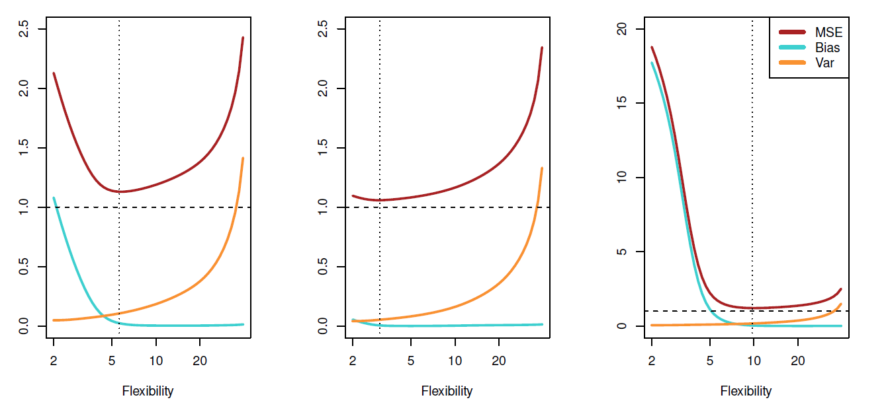
분류 문제
- 분류 문제에서 반응변수 \(Y\)는 질적 변수이다. 예를 들어 이메일은 \(C=(spam,ham)\) 중 하나이며, 숫자 이미지는 \(C=\{0,1,\ldots,9\}\) 중 하나에 속한다. 여기서
ham은 정상 이메일을 의미한다.
- 목표는 다음과 같다.
- 미래의 표지되지 않은 관측치 \(X\)에 \(C\)의 범주표지를 부여하는 분류기 \(C(X)\)를 구축한다.
- 각 분류 결과의 불확실성을 평가한다.
- \(X=(X_1,X_2,\ldots,X_p)\)에 포함된 서로 다른 예측변수의 역할을 이해한다.
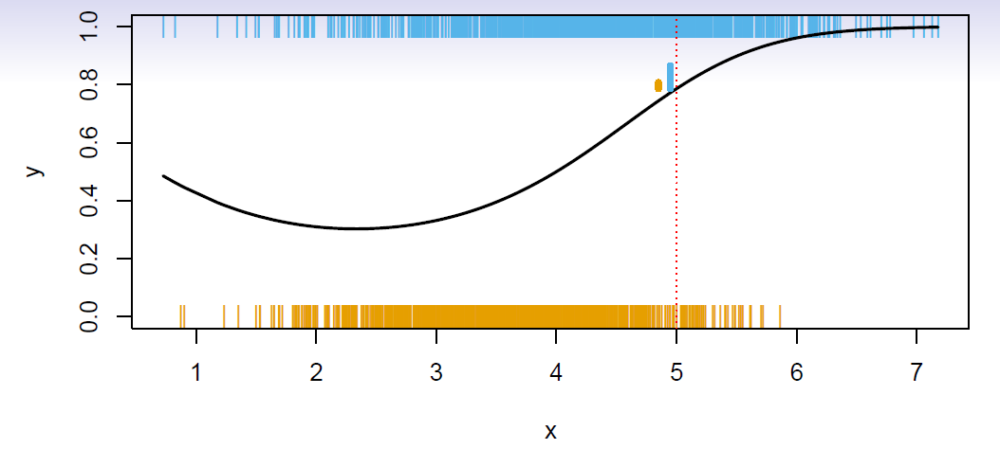
- 이상적인 \(C(X)\)가 존재할까?
- \(C\)의 \(K\)개 범주를 \(1,2,\ldots,K\)로 번호 붙인다고 하자.
- 다음을 정의한다.
\[
p_k(x)=P(Y=k\mid X=x),\qquad k=1,2,\ldots,K
\]
- 이는 \(x\)에서의 조건부 범주확률이다. 예를 들어 그림에서 \(x=5\)인 지점의 작은 막대그래프가 이를 나타낸다.
- \(x\)에서 베이즈 최적 분류기(Bayes optimal classifier)는 다음과 같다.
\[
C(x)=j\quad\text{if}\quad p_j(x)=\max\{p_1(x),p_2(x),\ldots,p_K(x)\}.
\]
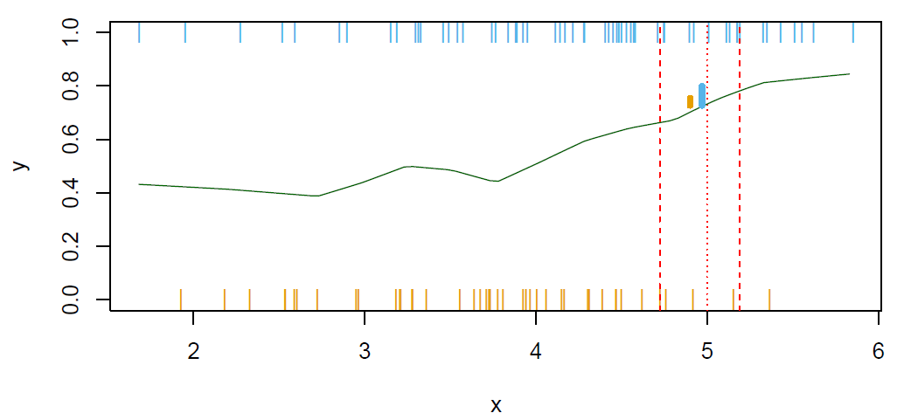
- 앞에서와 같이 최근접 이웃 평균을 사용할 수 있다.
- 그러나 차원이 증가하면 이 방법도 성능이 저하된다. 다만 \(\hat p_k(x)\) 자체를 정확하게 추정하는 것보다 최종 분류 \(\hat C(x)\)에는 그 영향이 다소 작을 수 있다.
분류에서의 정확도 측정
- 분류 문제에서 \(y_i\)는 범주표지이므로 회귀에서의 편향–분산 분해를 그대로 적용할 수 없으며 일부 수정이 필요하다.
- \(\hat C(x)\)의 정확도를 측정하는 가장 일반적인 지표 중 하나는 훈련 오분류율이다.
\[
Err_{tr}=\operatorname{Ave}_{i\in Tr}I\{y_i\neq\hat C(x_i)\}
=\frac{1}{N}\sum_{i=1}^{N}I(y_i\neq\hat y_i)
\]
여기서 \(I(y_i\neq\hat y_i)\)는 \(y_i\neq\hat y_i\)이면 1, 즉 잘못 분류되면 1이고, \(y_i=\hat y_i\)이면 0인 지시변수이다.
- 따라서 \(I(y_i\neq\hat y_i)=0\)이면 \(i\)번째 관측치가 올바르게 분류되었고, 1이면 오분류되었다.
- 시험 자료에서의 시험오차는 다음과 같다.
\[
Err_{te}=\operatorname{Ave}_{i\in Te}I\{y_i\neq\hat C(x_i)\}
=\frac{1}{M}\sum_{i=1}^{M}I(y_i\neq\hat y_i)
\]
- 좋은 분류기는 시험오분류율이 작은 분류기이다.
- 실제 \(p_k(x)\)를 사용하는 베이즈 분류기는 모집단에서 가능한 최소 오류율을 가진다.
- 베이즈 분류기는 각 관측치를 주어진 예측변수 값에서 가장 가능성이 높은 범주에 배정한다.
- 즉, 예측변수가 \(x_0\)인 시험 관측치를 다음 값이 가장 큰 범주 \(j\)에 배정한다.
\[
P(Y=j\mid X=x_0)
\]
- 서포트 벡터 머신은 \(C(x)\)를 위한 구조화된 모형을 구축한다.
- 로지스틱 회귀와 일반화가법모형 등을 이용하여 \(p_k(x)\) 자체를 구조적으로 모형화할 수도 있다.
예제: 베이즈 분류기
- 두 범주 분류 문제에서 \(Y\)가 범주 1과 범주 2라는 두 값을 가진다고 하자.
- 예측변수 값이 \(x_0\)일 때 \(P(Y=1\mid x_0)>0.5\)이면 범주 1에 배정하고 그렇지 않으면 범주 2에 배정하는 것이 베이즈 규칙이다.
- \(P(Y=1\mid x_0)=P(Y=2\mid x_0)=0.5\)가 되는 경계를 베이즈 결정경계(Bayes decision boundary)라고 한다.
- 다음 그림은 \(x=(x_1,x_2)^T\)인 모의자료를 보여준다.
- 주황색과 파란색 원은 두 범주에서 각각 100개씩 생성한 훈련 관측치이다.
- 주황색 영역은 \(P(Y=\text{주황색}\mid x)>50\%\)인 지점, 파란색 영역은 그 확률이 50%보다 작은 지점이며, 보라색 점선은 확률이 정확히 50%인 베이즈 결정경계이다.
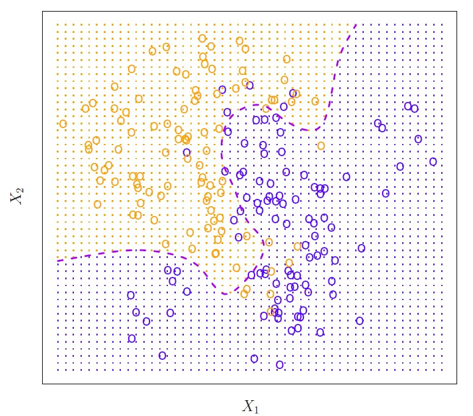
- 베이즈 분류기는 가능한 가장 낮은 시험오류율을 제공하며, 이를 베이즈 오류율(Bayes error rate)이라고 한다.
- \(x=x_0\)에서의 최소 오류확률은 \(1-\max_jP(Y=j\mid X=x_0)\)이다.
- 전체 베이즈 오류율은 다음과 같다.
\[
1-E_X\left[\max_j P(Y=j\mid X)\right].
\]
- 베이즈 오류율은 회귀에서의 감소 불가능한 오차와 유사하다.
- 그러나 \(X\)가 주어졌을 때 \(Y\)의 조건부분포는 알려져 있지 않으므로 실제로 베이즈 분류기를 직접 계산할 수 없다.
- 대신 베이즈 분류기는 다른 분류기를 평가하는 이론적 기준으로 사용된다.
- 조건부분포를 알 수 없으므로 이를 추정하고, 관측치를 추정확률이 가장 높은 범주에 분류해야 한다.
- 대표적인 방법이 K-최근접 이웃(K-nearest neighbors, KNN) 분류기이다.
K-최근접 이웃
- 양의 정수 \(K\)와 시험 관측치 \(x_0\)가 주어졌다고 하자. KNN은 훈련 자료에서 \(x_0\)에 가장 가까운 \(K\)개의 관측치를 찾으며, 이 집합을 \(N_0\)라고 한다.
- 범주 \(j\)에 대한 조건부 확률은 \(N_0\)에서 반응값이 범주 \(j\)인 관측치의 비율로 추정한다.
\[
\widehat{P}(Y=j\mid X=x_0)=\frac{1}{K}\sum_{i\in N_0}I(y_i=j)
\]
- 마지막으로 베이즈 규칙을 적용하여 시험 관측치 \(x_0\)를 추정확률이 가장 높은 범주에 배정한다.
예제: KNN
- \(K=3\)이고 시험 관측치 \(x_0\)에 가장 가까운 세 관측치 중 두 개가 범주 1, 한 개가 범주 2에 속한다고 하자.
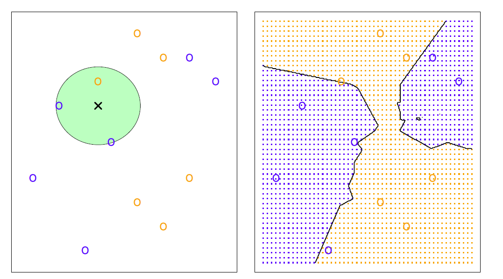
- 범주 1의 추정확률은 \(2/3\), 범주 2의 추정확률은 \(1/3\)이다.
- 따라서 \(x_0\)는 범주 1로 분류된다.
- KNN의 주요 문제는 \(K\)의 선택이며, 이에 대해서는 뒤에서 자세히 다룬다.
- 적절한 유연성 수준, 즉 적절한 \(K\)를 선택하는 것이 성공적인 분류에 매우 중요하다.
- 작은 \(K\)는 높은 유연성과 작은 훈련오차를 의미한다. 극단적으로 \(K=1\)이면 훈련오차가 0이지만 시험오차는 클 수 있다.
- 큰 \(K\)는 유연성이 낮음을 의미하며, 베이즈 경계의 비선형성 정도에 따라 훈련오차도 증가할 수 있다.
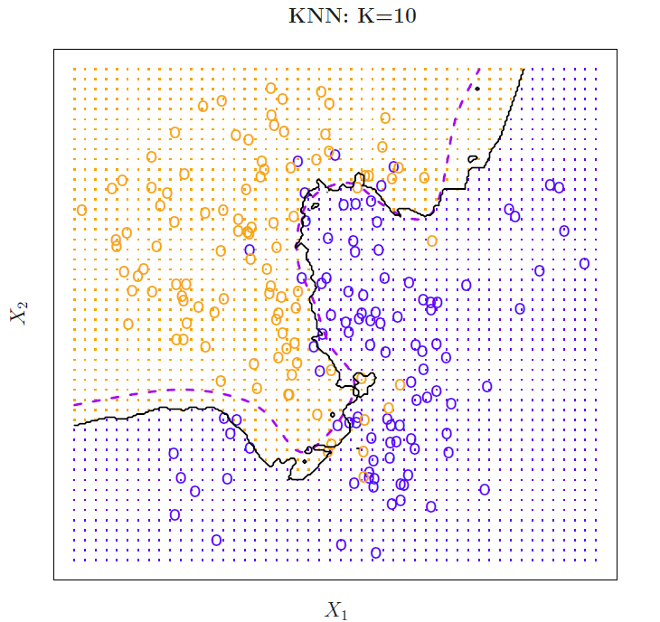
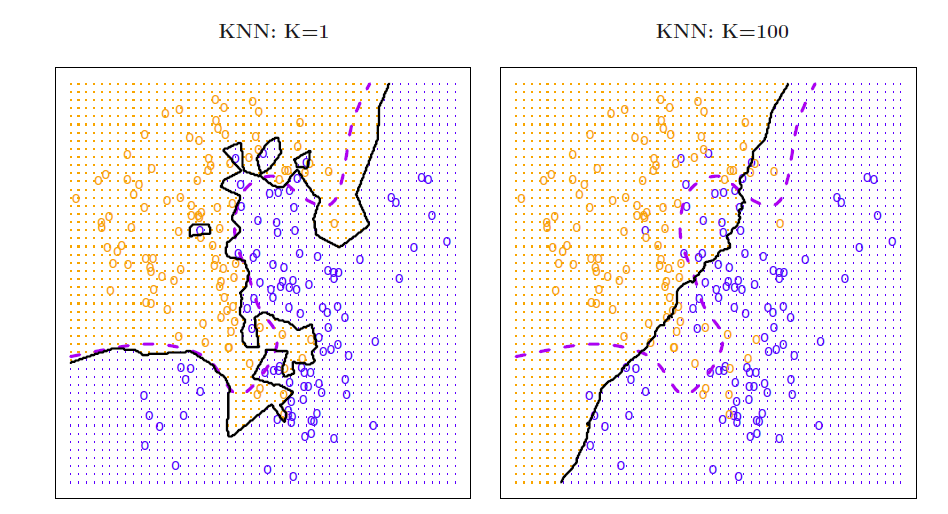
실선은 KNN 결정경계를, 보라색 점선은 베이즈 결정경계를 나타낸다.
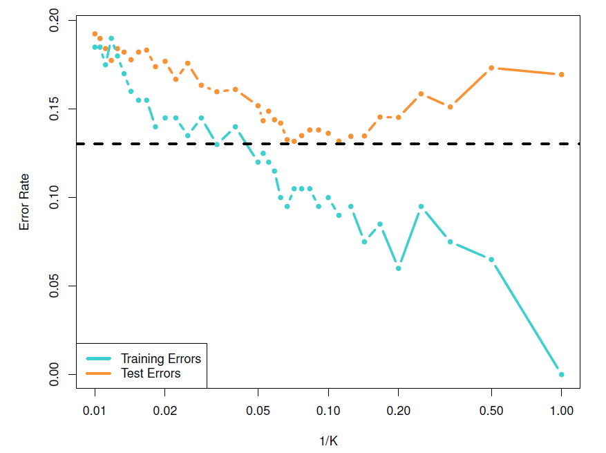